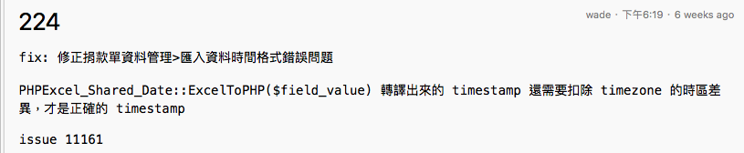
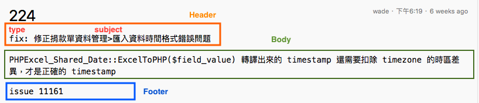
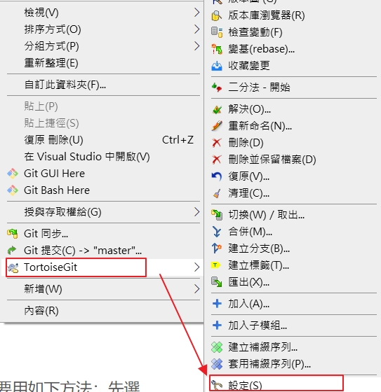
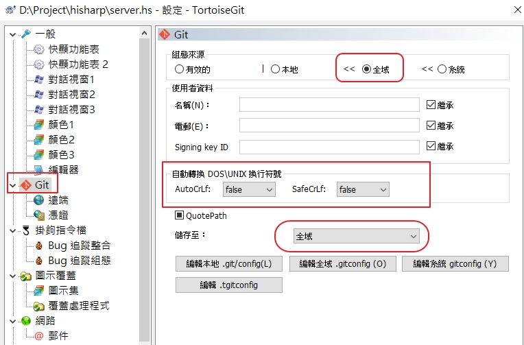
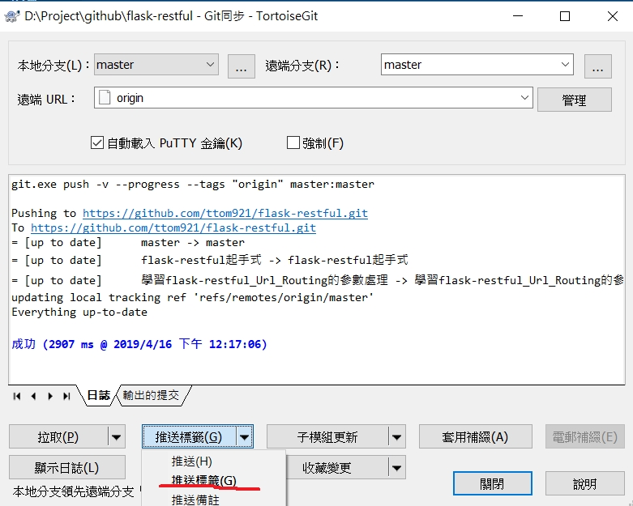
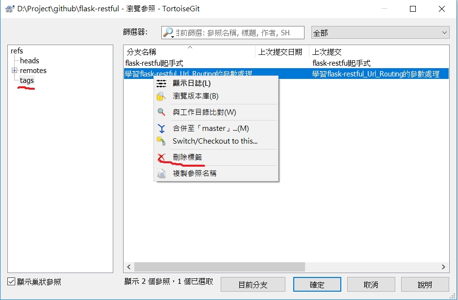

Git Commit Message的格式
Commit Message跟寫程式註解還蠻像的，最好可以寫下「為什麼」你要作這樣的異動，剛不是單單只記錄下你做了「什麼」異動。
Commit Message 之規範
在撰寫 Git 與 SVN 等版本控制軟體 Commit Message 時，可以參照國外 AngularJS 團隊的規範： AngularJS Git Commit Message Conventions
以下為這套訊息規範的展示與說明：
Commit Message 規範範例：

Commit Message 規範範例解析:

Commit Message 規範組成：
1 | Header: <type>(<scope>): <subject> |
1 | Body: 72-character wrapped. This should answer: |
1 | Footer: |
type: subject 是簡述不要超過50個字元
type 只允許使用以下類別：
- feat:新增/修改功能(feature)。
- fix:修補 bug (bug fix)。
- docs: 文件(documentation)。
- style: 格式(不影響程式碼運行的變動 wihte-space,formatting,missing semi colons,etc)
- refactor:重構(既不是新增功能，也不是修補bug的程式碼變動)。
- perf:改善效能(A code change that imporves performance)
- test:增加測試(when adding missing tests)
- chore:建構程序或補助工具的變動(maintain)
- rever:撤銷回覆先前的commit 例如:revert:type(scop):subject(回覆版本:xxxx)
Type是用來當訴進行Code Review的人應該以什麼態度來檢視Commit內容。
例加:
- 看到為fix，進行Code Review的人就可以用「觀察Commit如何解決錯誤」的角度來閱讀程式碼。
- 若是refactor，則可以放輕鬆閱讀程式碼如何被重構，因為動構的本質是不會影響既有的功能。
利用不的Type來決定進行Code Review檢視的角度，可以提升Code Review的速度。因此開發團隊應該要對這些Type的使用時機有一致的認同。
Commit 訊息範例
範例fix:
1 | fix: 自訂表單新增/編輯頁面，修正離開頁面提醒邏輯 |
範到feat:
1 | feat: message 信件通知功能 |
範到chore:
1 | chore: 更新 testing 環境 |
範例style：
1 | style: message 頁面，對 Component 做 Beautifier |
範到refactor:
1 | refactor: 重構取得「簽核流程種類名稱」邏輯 |
範到 pert:
1 | perf: 評核表單列表，優化取得受評者速度 |
範到 docs:
1 | docs: 新增註解 |
產生ChangeLog相關
conventional-changelog-cli 是一命令列工具，能解析 Git 符合 Angular style 的 Commit log，產生對應的 Change log。
使用前先透過 Npm 安裝套件至全域。
1 | npm install -g conventional-changelog-cli |
像是顯示 Change log 會產出的內容可帶參數 -w。
1 | conventional-changelog -p angular -i CHANGELOG.md -w -r 0 |
要產生 Change log的檔案 可帶參數 -s。
1 | conventional-changelog -p angular -i CHANGELOG.md -s |
參考資料
Git Commit Message 這樣寫會更好，替專案引入規範與範例
遠端倉庫版本回退方法
最近在使用git時遇到了遠端分支需要版本回滾的情況
問題
如果提交了一個錯誤的版本，怎麼回退版本？
如果提交了一個錯誤的版本到遠端分支，怎麼回退遠端分支版本？
如果提交了一個錯誤的版本到公共遠端分支，又該怎麼回退版本？
本地分支回退的方法
先找到要回退的版本 commit id:
1 | git reflog |
接著回退版本
1 | get reset --hard 3c777xxxx4bad9xxxxxxxba028c3acc |
遠端分支版本回退的方法
如果你的錯誤提交已經推送到自己的遠端分支了，那麼就需要回滾遠端分支了。
首先要回退本地分支：
1 | git reflog |
緊接著強制推送到遠端分支
1 | git push -f |
Git Rebase-合併的另種選擇
在Merger前思考一下此情境是否使用Rebase比較優雅？
在使用Git做為開發版本控管時，通常會建立master作為主要分支，然後建立develop分支做為開發使用，等待develop分支完成所需之各個開發任務後，再將develop上所有異動併回master主要分支中，並可以以此節點作為產品release時機點，這是常見的基本Git版控流程，因此合併(Merge)功能應該是比較可以理解的。
接著請大家試一個情境，開發團隊預計完成兩項功能的開發，當工程師用devlope分支發開完功能後。就在開發功能的的途中發現其用模組有很嚴動的Bug存在，會影響接續的開發(甚至線上系統也會有問題)；𦙲此會選擇先check out到master分支進行Bug修復，等待修復完後立刻commit建立節點，而開發團隊可以使用master最新節點來佈修正版本的程式。
接著為了順利完成develop分支接續的開發工作，因此需把master剛剛修復共用模組的變更合併到develop分支中，好讓develop分支中的錯誤可以被排除，方便繼續開發功能二。此時有兩種選擇，第一就是使用merge做反向合併(develop merge master)，為何說反向是因為通常墽是主幹分支來合併其他分支，而且前情況是需要讓分支來合併主幹；接著在完成功能二後，我們又需要執行正向合併(master merge develop)，讓develop的變更回歸到master主要分支中，而若以此情況繼續演進下去，不難想像最後maser與develop分支會有互相交織的複雜網狀演進圖存在。
因此我們可以考慮選擇另一種方式進行，就是使用rebase來將develop分支重新接到指定的maser分支節點，讓節點演進線圖比較單純好𢝶，但此舉會造成develop上舊commit節被異動(因為長出分支的節位置已經變動)，==如果目前分支是有與其他人其用的話，就不適合使用rebase。==執行rebase後節點演進圖是很單純的移動develop分支節點到Bug修復完成的maser節點上.。
TortoiseGit 相關
TortoiseGit設定不改變linux的換行符號
起因是因為在目前的專案的服務器是使用linux來開發的，因為會用到bash的script的命令行，所以在下載檔案時會進行換行的轉換，所以要將TortoiseGit的自動轉換功能關畢，如下圖來設定

會跳出下面的畫面，來選擇全域，在””自動轉換DOS\UNIX下換行符號””選擇 AutoCrLf:false和SafeCrLf:false

TortoiseGit上傳本地標籤
在一番測試後，發現遠端標籤和本地標籤似乎不會自動同步，本地標籤要上傳時，在推送時選擇’推送標籤’

使用 TortoiseGit 刪除 GitHub 上的標籤
最後在 TortoiseGit 的官網找到方法，在實際測試後，終於成功。刪除遠端標籤要用如下方法：先選擇「瀏覽參照」。

安裝windows版的Git
首先到官方網站下載windows版最新版本
通常按下一步
下載TortosiawGit(https://tortoisegit.org/)
安裝即可
TortoiseGit配置來重設密碼
因為Git 有加強安全性，所以Git Credential Manager for Windows的工具要更新，之後可以在windows認證
管理器來處理帳號，可以刪除後來重登可以參考保哥的文章
如何在tortoisegit合併branch
- 1-1 首先，我們要先把儲存庫目前的版本HEAD切換回主要分支master上。這個動作叫做Checkout
- 1-2 當你按右鍵的時候,然後選擇的是TortoiseGit中的「合併」功能
- 1-3 請選擇你要拿來合併的分支，也就是你剛剛開發完新功能的分支
如何在commit下和issue有關
如果要有關系加入
1 | #1 |
加入下列的關鍵字fixed 會關畢此issue
1 | fixes #12 |
git相關命令
記錄一下命令行的使用
在資料夾上顯示branch name
Add these lines in your ~/.bashrc file
1 | vim ~/.bashrc |
內容
1 | # Show git branch name |
下指令
1 | $ source ~/.bashrc |
列出所有的branch
1 | git branch -a |
切換到branch
1 | git checkout <branch_name> |
刪除的全部回復
1 | git checkout -- . |
取消對檔案的修改(rollback)
1 | git checkout release.py |
列出git的版本圖
1 | git log --all --decorate --oneline --graph |
列出所有的git的branch的指令
1 | git branch -a # 列出所有 branch |
刪除git的branch的指俞
1 | git branch -d new-branch |
列出所有git的tab
local端
1 | git tag -l |
Remote端
1 | git ls-remote --tags origin |
刪除git的tag
local端
1 | git tag -d 12345 |
Remote端
1 | git push --delete origin tagName |
在github出現安全的問題
如下的警告
“We found potential security vulnerabilities in your dependencies.”
可到它的列表看那一個模組需要升級
例如
ssri 有問題它會要你升級到那一版
1 | npm install ssri@5.2.2 --save |